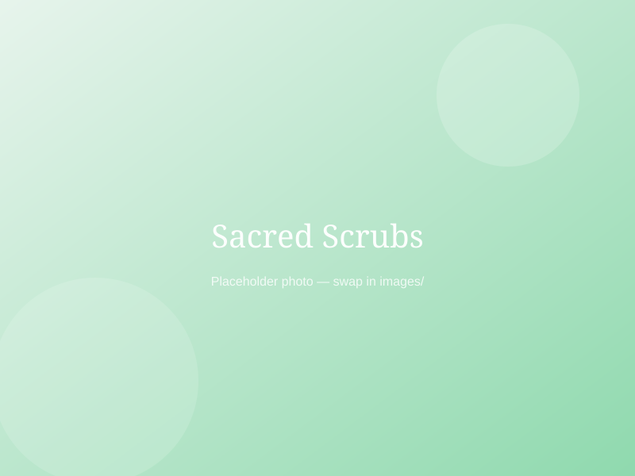

Natural body scrubs, made by hand
Skin care that feels like a slow morning
Sacred Scrubs makes batches of natural hand and foot scrubs — real ingredients, real flavours, nothing rushed.

Why people come back
Every jar is mixed to the nines, so what you get is close to what just came off the counter.
All-natural ingredients
Sugar, salt, cocnut oil, olive oil — nothing you can't recognise on the label.
Made for hands and feet
Every scrub comes in a hand or foot formulation, so the texture actually fits where it's used.
Natural ingredients, real flavours
From Lemon to Peppermint — pick a scent that actually feels like a treat.
Ready to pick your scrub?
Browse the full range, choose your fragrance, size and hand-or-foot formula.
View the catalogue